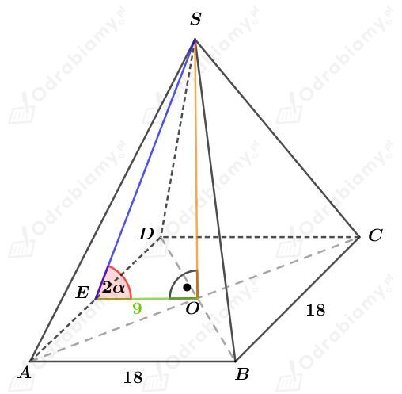
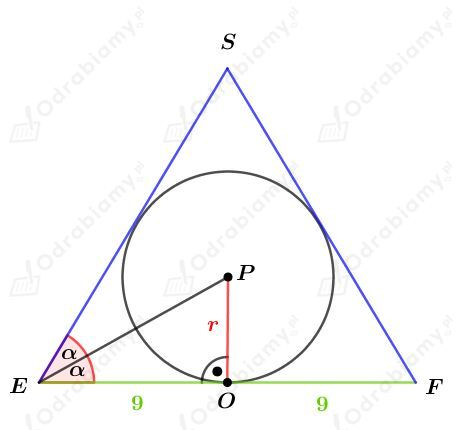
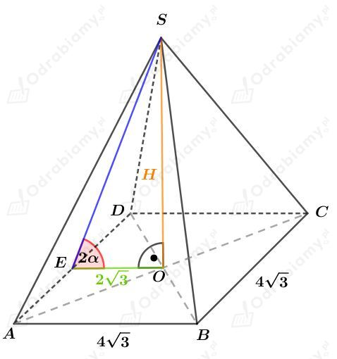
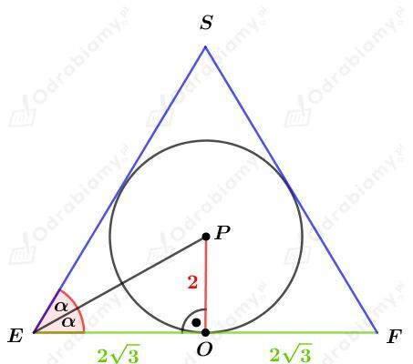

a)
Dany jest ostrosłup prawidłowy czworokątny. Rysunek:

W ten ostrosłup wpisano kulę. Naszkicujmy przekrój tego ostrosłupa. Mamy:

Wiedząc, że
otrzymujemy:
Wyznaczmy objętość kuli wpisanej w ten ostrosłup, czyli kuli o promieniu długości 3 cm. Mamy:
b)
Dany jest ostrosłup prawidłowy czworokątny. Rysunek:

W ten ostrosłup wpisano kulę. Naszkicujmy przekrój tego ostrosłupa. Mamy:

Wyznaczmy tangens kąta 𝛼. Mamy:
Zatem
czyli
Kąt nachylenia ściany bocznej do podstawy tego ostrosłupa ma miarę 60o.
Zauważmy zatem, że trójkąt EFS jest trójkątem równobocznym. Wysokość ostrosłupa H jest również wysokością trójkąta równobocznego EFS. Korzystając ze wzoru na długość wysokości trójkąta równobocznego mamy:
Wyznaczmy objętość tego ostrosłupa. Mamy: